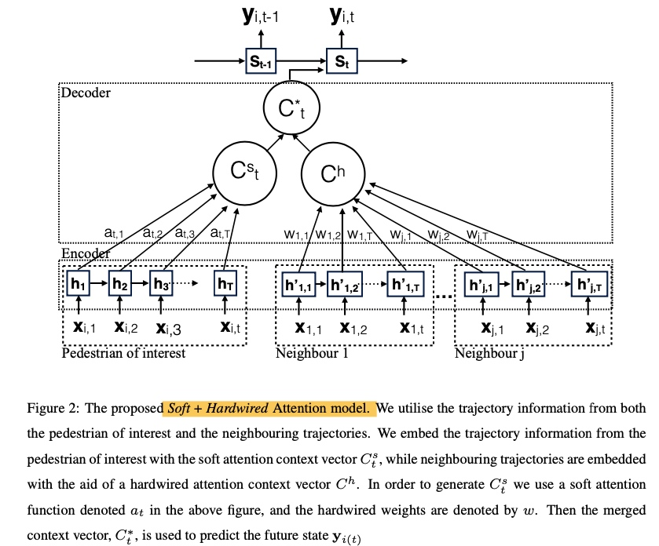

【异常检测1】无监督-多元数据
☆☆☆https://github.com/yzhao062/anomaly-detection-resources 资料综述，包括相关工具与论文
总述：
从异常检测要检测的目的数据的不同，大致可以分为如下几类，后续会分别对这几类进行综述学习。
- 多元特征数据，传统的n_sample x n_features形式
- 高维数据
- 时间序列，行为序列
- graph, network
1.多元特征数据的检测方法
基于(样本x特征)的数据

https://zhuanlan.zhihu.com/p/49072315
(1) 统计与概率模型
依据数据的分布做假定
- 3sigma
- 四分位点
箱线图中的四分位点以及异常值, Tukey’s Test: 根据四分位点对最小值和最大值的估计分别是
\[min_value = Q1 - k(Q3-Q1)\]
\[max_value = Q3 + k(Q3-Q1)\]
其中k=1.5 时候可认为是中度异常，k=3时是极度异常。该方法应该假定了数据正态分布(或者是对称分布吧)
- 检测异常值Grubbs的检验（Grubbs 1969和Stefansky 1972）用于检测单变量数据集中的单个异常值，该单变量数据集遵循近似正态分布。如果您怀疑可能存在多个异常值，建议您使用Tietjen-Moore测试或广义极端学生化偏差测试而不是Grubbs测试
(2) 线性模型
- PCA 大部分正常样本服从相似的分布映射的过程中在高低维的位置接近
- 协方差矩阵
(3)基于相似度/距离衡量的模型
- k近邻
- 基于密度的 LOF, COF, Isolation Forest
- OneClassSVM
(4) 聚类的方法， BIRCH，DBSCAN
(5) 其他
- auto encoder
思路类似PCA，数据进行压缩然后再还原，只是是非线性的。异常数据还原后的误差应该较大
其他
3.video中异常行为检测
- 行为序列的异常？
(1) sequence based
- 相似性： 假设所有数据都是normal的，然后找到normal sequence， 最后计算与normal sequence的距离(比如LCS)
- window based。traing：所有sequence 分成多个windows，windows的score：frequence；classifier：随机生成数据作为anomaly标签。 testing：instance的各个windows的anomaly socre组合：取平均；取大于阈值的个数；LFC（计算anomaly window前n个window中anomaly 的个数）
- HMM：
【Soft + Hardwired Attention: An LSTM Framework for Human Trajectory
Prediction and Abnormal Event Detection】
本文主要提出了一种基于LSTM的行为预测和异常检测方法
- 文献回溯
- 轨迹聚类
- 预测人类行为，一个常用的方法是social force model
- attention models

mall场景：
- 统计粒度的： 速度、stay长时间、
- 轨迹路径的异常(x,y,t), walk变向、折返、speed突变等。 局部的变动
- 基于act sequence，整体序列的
工具-Pyod
- Python异常检测工具库
Pyod， 包含大概20多种方法，其中包含深度学习以及outlier ensembles - SUOD(https://github.com/yzhao062/suod),Pyod作者的一个加速适用large-scale的异常检测工具
- sklearn https://scikit-learn.org/stable/modules/outlier_detection.html
常用的几个方法
ensemble.IsolationForest
LOF: neighbors.LocalOutlierFactor
Pyod是一款专门做异常检测的python工具箱
github: https://github.com/yzhao062/pyod
文档说明: https://pyod.readthedocs.io/en/latest/index.html
基本API：
BaseDetector.fit(X, y) # y可有可无
BaseDetector.decision_function() # 原始的异常得分
BaseDetector.predict()
BaseDetector.predict_proba() # 给出是异常点的概率
其属性
BaseDetector.decision_scores_ # 异常得分，score越大越异常
BaseDetector.labels_ # 1 代表异常
与sklearn区分
借鉴了sklearn的API形式，但是注意两者不通用
例子
（1） one model
# train the KNN detector
from pyod.models.knn import KNN
from pyod.utils.data import generate_data
from pyod.models.combination import aom, moa, average, maximization
## ! 输入的X必须是array [n_samples, n_features]
X, y = generate_data(train_only=True) # load data
X.shape
clf = KNN()
clf.fit(X)
# get the prediction labels and outlier scores of the training data
y_train_pred = clf.labels_ # binary labels (0: inliers, 1: outliers)
y_train_scores = clf.decision_scores_ # raw outlier scores
# get the prediction on the test data
y_pred = clf.predict(X) # outlier labels (0 or 1)
y_scores = clf.decision_function(X)
(2) 有时候单个model结果不一定可信，可以将多个model的结果进行combine
合并的方式主要有：
- average
- maximization
- average of maximization (AOM), 将所有的detector分成不同的组，每组先max， 然后对不同组再就mean
- maximization of average(MOA), 将所有的detector分成不同的组，每组先average， 然后对不同组取max
# initialize 20 base detectors for combination
import numpy as np
k_list = [10, 20, 30, 40, 50, 60, 70, 80, 90, 100, 110, 120, 130, 140,
150, 160, 170, 180, 190, 200]
n_clf = 10
train_scores = np.zeros([X.shape[0], n_clf])
for i in range(n_clf):
k = k_list[i]
clf = KNN(n_neighbors=k, method='largest')
clf.fit(X)
train_scores[:, i] = clf.decision_scores_
#
from pyod.utils.utility import standardizer
# scores have to be normalized before combination, 0均值，1 standard error
scores_norm = standardizer(train_scores)
## 不同的组合方法
comb_by_average = average(scores_norm)
comb_by_maximization = maximization(scores_norm)
comb_by_aom = aom(scores_norm, 5) # 5 groups
comb_by_moa = moa(scores_norm, 5) # 5 groups
参考
https://blog.csdn.net/weixin_38730719/article/details/88026338
https://zhuanlan.zhihu.com/p/93779599
https://www.zhihu.com/question/280696035/answer/417091151
https://blog.csdn.net/g2v13ah/article/details/78474370
https://www.zhihu.com/question/280696035
【异常检测2】时间序列
| paper | year | ||
|---|---|---|---|
| Outlier Detection for Temporal Data: A Survey | 2014 | ||
问题分类

一 参数模型-时间序列model
通过建模的方式去拟合原有的时间序列曲线，然后计算模型值与实际值的偏差找到异常值。比如ARMA,ARIMA,VARMA等等
| Data Type | 示例场景 | 方法 | 方案 | 例子 |
|---|---|---|---|---|
| time series Database | 轨迹trace | 学习normal的model，然后找到异常 | 无监督判别方法 序列相似度 + 序列cluster | |
| 学习参数model，预测误差 | 无监督参数方法-（FSA, Markov，HMM | |||
| 看cell及其后续的趋势、数量等 | 无监督OLAP based 方法 | Mining Approximate Top-K Subspace Anomalies in Multi-dimensional Time series Data | ||
| 有监督的 | ||||
| 一条时间序列 | 1.检测points | prediction model | 用时间序列或者简单统计的方法预测 | 详见下面的例子 |
| 2.检测subsequence | ||||
- 时间序列检测
(1) 检测points
prediction model
- 以[t-k, t+k]的近邻区间的median，其他自定义规则
- AR 自回归
- ARIMA等其他
Profile Similarity based Approaches
根据历史的均值 和变异来判断当前的
Deviants
从MDL最小描述长度的角度，如果从原始的序列中移除一个点P，
(2)检测subsequence
给定一个时间序列T，检测出是否存在异常子序列。 todo xxxx
2 stream data 检测
(1) 多元data stream—— 进化的prediction model
方法1： online discounting learning 算法
在原有的多元数据检测的基础上，加上动态更新逻辑

方法2：dynamic cluster maintenance 通过动态聚类的方式，比如LCS距离
方法3：dynamic bayesian network
上述的方法相当于模型不变，随着时间改变去update参数。然而有时候可能model也不适用。《“Real-time Bayesian Anomaly Detection for Environmental Sensor Data》
(2) 基于滑动窗口计算距离的方式
可以分为global的outlier和local的outlier (LOF)
3, high-dimensional data streams
- Stream Projected Outlier deTector (SPOT)
4.分布式场景下的stream data的检测
详见论文
5， 基于时空的异常检测
除了时间角度、还有空间角度。
(1)场景：输入一个时空数据集，找到 ST-Outliers, i.e., spatio-temporal objects whose behavioral (non-spatial and non-temporal) attributes are significantly different from those of the other objects in its spatial and temporal neighborhoods
一般的思路过程：首先找到空间异常，然后再去验证时间粒度的neighborhood
方案1： Birant et al. 改进的DBSCAN聚类方式，(时间，空间)的neighbors，然后对于这些候选异常点，再分别从空间，时间角度去验证时是否是真的
方案2：Adam et al. 距离based的空间聚类
（2）找到ST-Outlier solids, i.e., a region across time。 一个区域某段时间异常
方案1：Wu et.al 提出的Outstretch算法，可以发现topK的空间异常点。具体的是使用 Exact-Grid Top-K and Approx-Grid Top-K algorithms
方案2：wavelet fuzzy classification方法。先通过小波变换提取模式，然后再利用图像处理技术进行边缘检测
（3）轨迹异常
方案1：distance based 基于轨迹相似度进行cluster
方案2：direction and density
方案3：Historical Similarity, 和前面的方法稍微不同，这个是在每个time step上，计算当前轨迹与其他所有轨迹的相似值。然后不断扩充这个相似向量。对于某个pair，当发现这个相似值出现突变的时候(之前不相似突然想你死，或者之前相似变得突然你不相似)说明出现了异常
6，temporal network 异常检测
其他
场景1: 是否超出某个阈值

看一段窗口内的均值是否超过THRESHOLD
场景2：数据突变
正常情况应该是光滑的曲线，不应该出现突然的上涨或下跌。=> 检测环比附近的数据

前后窗口均值比值 \(r(t)=\frac{x_t + ...x_{t-w+1}}{x_{t-w}+..+x_{t-2w+1}}\)
场景3：数据有规律的周期波动
检测同比，看有无异常。 统计历史上相同侍寝的数据的均值、标准差，假设正态分布，计算z-score
https://juejin.im/post/5c88a2e95188257e914052e4
https://github.com/Tencent/Metis
工具 https://github.com/chickenbestlover/RNN-Time-series-Anomaly-Detection
（2）时间序列数据
- 关于时间序列的检测 工具包 https://github.com/rob-med/awesome-TS-anomaly-detection
[Python] skyline: Skyline is a near real time anomaly detection system.
[Python] banpei: Banpei is a Python package of the anomaly detection.
[Python] telemanom: A framework for using LSTMs to detect anomalies in multivariate time series data.
[Python] DeepADoTS: A benchmarking pipeline for anomaly detection on time series data for multiple state-of-the-art deep learning methods.
[Python] NAB: The Numenta Anomaly Benchmark: NAB is a novel benchmark for evaluating algorithms for anomaly detection in streaming, real-time applications.
自动化检测问题
https://www.infoq.cn/article/e7kgB9EVJXkQdRVSsDSo
公司应用
how to use for us
- 特征值异常
- 时间序列异常
- 时空-轨迹trace异常


Copyright © 2015 Powered by MWeb, Theme used GitHub CSS.